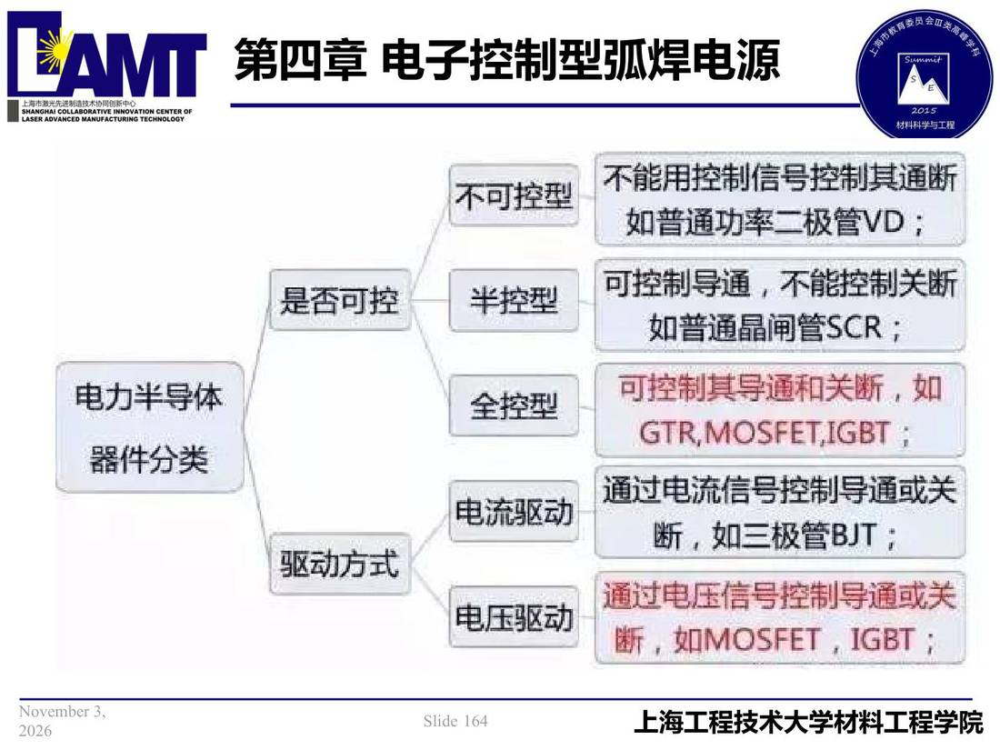

04 第4章 电子控制型弧焊电源/p164 不可控型
p164 不可控型
📄 原文：📄 弧焊电源 课件（PDF 第 164 页）（幻灯片 164/273；PDF 第 164 页）
不可控型

讲义原文
本页在课件中是纯图文版式（无文字层），内容以页图与下面的 OCR 文本为准。
页面文字（OCR 机读，可能有错字，以页图为准）
不可控型 是否可控 半控型 电力半导体 件分类 全控型 电流驱动 驱动方式 电压驱动 不能用控制信号控制其通断 如普通功率二极管VD； 可控制导通，不能控制关断 如普通晶闸管SCR； 可控制其导通和关断，如